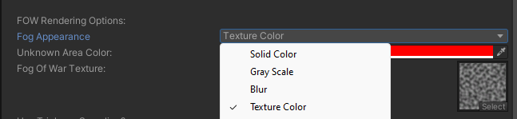

Appearance options on the Fog Of War World component. The available options depend on the selected Fog Appearance mode — see Fog Appearance for a conceptual overview.

Appearance Mode & Color
Property
Type
Default
Description
Fog Appearance
enum
Solid Color
The render style: Solid Color, Grayscale, Blur, Texture Sample, Outline, None, or Custom. Change at runtime with SetFowAppearance.
Fog Color
Color
(0.35, 0.35, 0.35)
The fog color. RGB sets the tint; alpha controls opacity. For Grayscale/Blur it acts as a color pre-multiplier.
Grayscale
Property
Type
Default
Description
Saturation Strength
float
0
How strongly color is removed in unexplored areas.
Blur
Property
Type
Default
Description
Blur Strength
float
1
Blur intensity.
Blur Distance Screen Percent Min
float (0–2)
0.1
Minimum screen-space blur offset.
Blur Distance Screen Percent Max
float (0–2)
1
Maximum screen-space blur offset.
Blur Samples
int
6
Number of blur samples (higher = smoother, more expensive).
Texture Sample
Property
Type
Default
Description
Fog Texture
Texture2D
—
Texture used to render the fog.
Use Triplanar
bool
true
Triplanar projection for the texture (3D). Disable for single-axis projection.
Fog Texture Tiling
Vector2
(1, 1)
Texture tiling scale.
Fog Scroll Speed
Vector2
(1, 1)
Texture scroll animation speed.
Outline
Property
Type
Default
Description
Outline Thickness
float
0.1
Thickness of the outline drawn at the fog boundary.
Pixelation
Property
Type
Default
Description
Pixelate Fog
bool
false
Quantizes the fog into pixel blocks.
World Space Pixelate
bool
false
Pixelate in world space instead of revealer-local space.